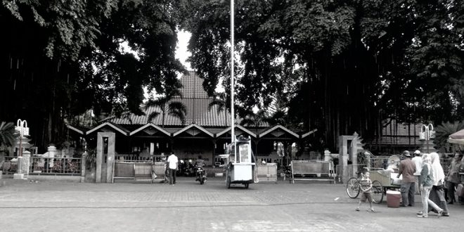
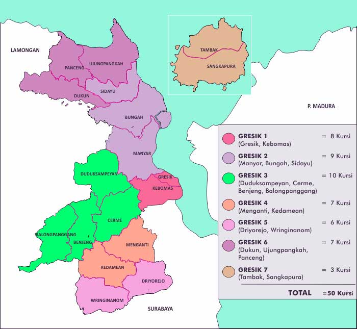
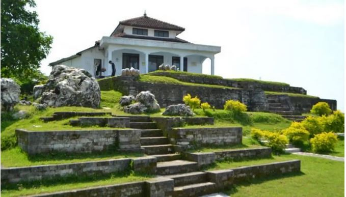
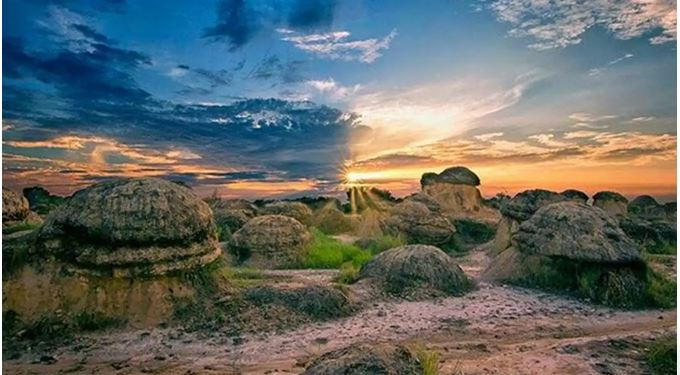
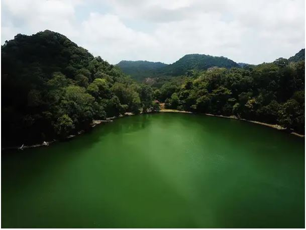

Sejarah

Sejarah
Sumber : kompasproperti
Kabupaten Gresik (sebelumnya bernama Kabupaten Surabaya) (Jawa: Hanacaraka: ꦓꦽꦱꦶꦏ꧀, Pégo: ڠگرسۓ, bahasa Belanda: Grissee) adalah sebuah wilayah Kabupaten di Provinsi Jawa Timur. Ibu kotanya adalah Kecamatan Gresik meskipun Kantor Bupati Gresik terletak di Kecamatan Kebomas. Kabupaten Gresik memiliki luas sekitar 1.194 km². Wilayah Kabupaten Gresik juga mencakup Pulau Bawean, yang berada 150 km lepas Laut Jawa. Pada tahun 2020, penduduk kabupaten Gresik berjumlah 1.311.215 jiwa dengan kepadatan 1.098 jiwa/km2.
Berdasarkan filosofi Sunda, kata Bandung juga berasal dari kalimat Nga-Bandung-an Banda
Indung, yang merupakan kalimat sakral dan luhur karena mengandung nilai ajaran Sunda.
Nga-Bandung-an artinya menyaksikan atau bersaksi. Banda adalah segala sesuatu yang berada di
alam hidup yaitu di bumi dan atmosfer, baik makhluk hidup maupun benda mati. Sinonim dari
banda adalah harta. Indung berarti Ibu atau Bumi, disebut juga sebagai Ibu Pertiwi tempat
Banda berada.
Pabrik Peleburan dan Pemurnian Tambang (smelter) terbesar di dunia milik PT Freeport Indonesia juga akan berdiri di Gresik. Bersama dengan Sidoarjo, Gresik merupakan salah satu penyangga utama Kota Surabaya, dan termasuk dalam kawasan Gerbangkertosusila.
Geografis

Geografis
Sumber : Pemerintah Kabupaten Gresik
Kabupaten Gresik termasuk salah satu kabupaten di dalam wilayah pesisir utara Provinsi Jawa Timur. Letak Kabupaten Gresik berada di sebelah barat laut Kota Surabaya yang merupakan ibu kota provinsi. Pusat Pemerintahan Kabupaten Gresik yaitu Kecamatan Gresik berada 20 km sebelah utara Kota Surabaya. Kabupaten Gresik terbagi dalam 18 kecamatan dan terdiri dari 330 desa dan 26 kelurahan.
Secara geografis, wilayah Kabupaten Gresik terletak antara 112°-113° BT dan 7°-8° LS dan merupakan dataran rendah dengan ketinggian 2-12 meter di atas permukaan air laut, kecuali Kecamatan Panceng yang mempunyai ketinggian 25 meter di atas permukaan laut.
Wisata
Gresik juga memiliki julukan sebagai Kota Wali, yang menjadi sejarah penyebaran Agama Islam di kawasan Indonesia Nusantara. Maka tak heran, di sekitar Gresik Anda dapat menemukan berbagai makam para wali, seperti Sunan Giri, Syekh Maulana Malik Ibrahim, dan lain sebagainya.
Berikut ini terdapat wisata yang ada di Gresik :
-
Giri Kedaton

Giri Kedaton
Sumber : Situs Budaya
Beralih dari wisata alam, tempat wisata populer sebagai wisata Gresik yang satu ini merupakan salah satu area bersejarah yang di Kabupaten Gresik. Giri Kedaton merupakan bangunan peninggalan yang dahulunya adalah pusat dari pemerintahan serta penyebaran agama Islam di Nusantara.
Dulunya, bangunan ini dibangun oleh Sunan Giri atau juga sering dikenal dengan sebutan Raden Paku. Kini, tempat ini menjadi tempat peninggalan bersejarah bagi peradaban umat Islam di Indonesia. Giri Kedaton berlokasi tepatnya di Jalan Sunan Giri 13, Pedukuhan, Kebomas, Gresik. Lokasinya yang berada di atas perbukitan membuat Giri Kedaton dikelilingi dengan pemandangan alam hijau yang menyejukkan mata.
-
Bukit Jamur

Bukit Jamur
Sumber : Tribun Surabaya
Dari namanya, mungkin Anda terbayang bahwa wisata alam populer di Gresik yang satu ini dipenuhi dengan berbagai jenis jamur tumbuh secara liar. Ini memang benar adanya, akan tetapi, jamur yang tumbuh memiliki diameter super besar dan mungkin menjadi satu-satunya tempat jamur-jamur tersebut berada.
Tentu saja, hal ini karena jamur-jamur raksasa yang ada di Bukit Jamur bukan jamur sebagai tumbuhan. Melainkan, jamur-jamur tersebut merupakan sebuah fenomena alam, di mana jamur raksasa ini merupakan bebatuan yang tersebar di area Bukit Jamur. Bebatuan tersebut dalam kurun waktu ratusan hingga ribuan tahun terkena hembusan angin secara konsisten, yang menyebabkan pengikisan di pinggiran batu. Maka tak heran, ketika Anda berkunjung ke Bukit Jamur, Anda akan merasa seolah-olah sedang berada di planet lain yang dipenuhi berbagai benda unik!
-
Danau Kastoba

Danau Kastoba
Sumber : wikimedia
Gresik memang penuh dengan surga-surga tersembunyi, yang terbentang di sekitaran area Jawa Timur. Surga tersembunyi yang satu ini bernama Danau Kastoba Bawean, yang berlokasi di Pulau Bawean, Gresik. Apabila Anda mencari tempat di mana Anda bisa menemukan hamparan hijau sepanjang mata memandang, dengan kondisi alam sunyi dan tenang, Danau Kastoba Bawean bisa Anda coba untuk dikunjungi.
Perjalanan ke Danau Kastoba Bawean memang membutuhkan effort lebih banyak. Setidaknya, Anda harus berjalan kaki hingga satu jam lamanya untuk bisa menikmati keindahan panorama alam di sekitar danau ini. Namun, Anda tidak perlu risau! Karena perasaan lelah berjalan kaki tersebut akan sangat terbayar sesampainya di danau ini.